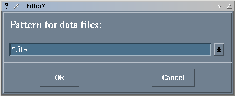

The data should be stored in FITS cubes, i.e. three-dimensional FITS files, where the single exposures are stacked along the third axis.
The IR-cameras we used in the past are made up of four quadrants. Since the transition between the quadrants is not perfectly smooth, it is a good idea to put the star not in the center of the entire frame, but in the center of one of the quadrants. Another advantage of this is that we get three quadrants with blank sky for free during the observation of the target. However, we need a sky observation done in the same quadrant as the star, since we create the badpixel mask from the sky observation. Therefore we observe the object at least twice, once in one quadrant, the second time in another quadrant. The same is done during the observation of the reference star. So, in the end we have at least four data cubes, where a single frame of each cube looks like this:
Sometimes one wants to go back to the object and take more observations of it. Sometimes it is possible to use the same reference for more than one target. Therefore one might end up with more data cubes, but the general principle remains the same.
One final remark about observations: mcspeckle uses the OBJECT keyword in the FITS-header to help you decide which files to use for which purpose. Although it is not strictly necessary, it makes life much easier if you enter useful object names during the observations.
To keep things halfway organized, we recommend to put the files that belong together into one directory (i.e. the observations of an object, the corresponding reference, and possibly other objects that should be reduced with the same reference). Then, cd to this directory and start mcspeckle by typing
mcspeckle
It should open a small window and ask for the names of the data files:
You don't have to enter the filenames individually (in fact, you can't), but a pattern that describes them all. The default is "*.fits", you can enter something else, or pick one out of a list of predefined patterns that appears if you click on the button with the arrow at the right. If you click on "Ok", mcspeckle reads all files matching the pattern and creates a list with several controls for each data file:
In the upper right corner of each box is a button labeled "Display" that will do just that: display this file in ds9. If ds9 is not yet running, it will be started, otherwise the running ds9 is told to display the file. You are looking at the raw data with all the bad pixels, therefore you should set the scaling in ds9 to "zscale" to see the star.
In the bottom row, there are some pop-up menus where you tell mcspeckle how this file should be split and used.
At the top of the window are three menus that can be used to quickly adjust several settings at once. "All Areas..." and "Split all..." set the "Used Area" and "Split" menus of all data files to the same value. In the "Reference" menu, you can set which objects should be used as reference stars. This relies on the OBJECT keyword in the FITS-header.
With our example data, you just have to use the "Reference" menu to make "P129984" the reference star.
At the bottom of the window are two buttons that will abort the program or take you to the next step. Clicking on "Next Step: Assigns" will close the window and open another:
Every object data file will have one sky and one reference data file assigned to it. Likewise, every reference file will have one sky file. There are several pop-up menus that allow you to set these. At this point in the data reduction, the skies are used to find bad pixels and subtract the background. Therefore you should assign sky files that cover the same area on the chip as the corresponding object or reference file. To make the decision easier, mcspeckle appends the letters "t", "b", "l", and "r" to the filenames of the top, bottom, left, and right parts. Furthermore, it creates the directories "obj", "osky", "ref", and "rsky", and sorts its output files into them.
Below the pop-up menus are two buttons. "Same Sky-#" will set all skies so that the first object is assigned to the first sky, the second object to the second sky, and so on. "Crossed Sky" assignes the first object to the second sky, the second object to the first sky, and so on. With the standard observation scheme described above, this results in the assignments of objects and skies covering the same area on the chip. Mcspeckle initially uses this setting.Further down are again two buttons that abort the program or continue to the next step. This will close the window and open yet another one:
Now we come to the details of what we call "prereduction", that is sky-subtraction, flatfielding, creation of the badpixel mask etc.
If "remove bad frames" is activated, the program will try to detect and remove bad frames. This is done by computing the average of all pixel values in all frames and then comparing the average of each individual frame to it. Frames deviating by more than 3 sigma will be removed."Badpixmask options" are the options passed to the prespeckle program when it creates the badpixel mask from the sky. To create the badpixel mask, every pixel is compared to the average of the pixels in a box around it. Pixels that deviate by more than a specified number of sigmas are marked as bad. This is repeated several times, omitting known badpixels when computing the average. If the box contains not enough good pixels, its size will be increased up to a certain maximum. In order to avoid marking too many pixels as bad, one can set a fraction of the total number of pixels in the frame as upper limit. If the program detects more badpixels, it increases the number of sigmas a pixel is allowed to deviate and tries again. Nearly every parameter can be set in this algorithm, here is a list of all the options (default values are in square brackets):
-nsigm n minimal no. of sigmas a bad pix must deviate [3.0]
-boxr r min. radius of the box used to compute the mean [3]
-maxbox r max. radius of the box used to compute the mean [12]
-steps s maximal number of steps [5]
-badfrac f maximal fraction of bad pixels in the frame [50]
-im mask name of predefined mask
-c coord-list ascii-file containing known bad pixels
-r region saoimage-region containing known bad pixels
You can also give a predefined mask with known badpixels. This
should be a FITS-file where good pixels have a value of zero and
badpixels some value other than zero. The data in the file should
be in integer format, since zeroes in floating point format
sometimes turn out as not exactly zero due to rounding errors. The
filename of the predefined mask can be entered in the field next to
the button labeled "Predef.Badpixmask:", but it's probably easier to
click on the button and select the mask from the menu that pops up.
This menu contains all files in the "Masks" subdirectory in the
Binary-Speckle directory.
In the next line, you can enter the filename of the flatfield or select it from the menu. This menu contains all files in the "Flats" subdirectory in the Binary-Speckle directory. We hardly ever used flatfields for speckle observations, therefore we didn't include one in the example data set. A good flatfield doesn't hurt, but it also doesn't improve the result very much.
The last line in the window contains three buttons. "Write Makefile" will write the makefile for the prereduction (it is called "prered.make"). If you wish, you can leave mcspeckle and start the prereduction by typing "./prered.make" or "gmake -f prered.make" (if GNU make is called gmake on your computer). The "Go!" button will write the makefile and immediately start it. "Exit" will leave mcspeckle without doing anything. All your settings will be lost in this case!If you click on "Go!", mcspeckle iconifies itself to show the shell window where it was started. In this window appears a lot of text output from the programs that actually do the data reduction. If all goes well, finally the mcspeckle-window reappears in a new shape.
If you quit mcspeckle and start the prereduction from the command line, you can restart mcspeckle and continue the data reduction by typing
mcspeckle Main.grp
The mcspeckle-window then looks like this:
This is a list of buttons that start the different steps in the data reduction. "Select Datafiles" leads back to the steps we just did. "Add Bad Pixels" is the topic of the next section, the other buttons will be explained later.
At the same time, an average frame of the first data cube will be displayed in ds9. To see badpixels, it is usually best to set the scaling in ds9 to "minmax" and "log". You probably want to increase the zoom-factor, too. To mark a badpixel, set "region" to "point" and simply click on the pixel. If you marked all bad pixels in an image, click on "Correct Badpixels" in mcspeckle's window. It will read the list of regions set in ds9, mark the pixels in the badpixel mask, correct them in the image, and finally display it again in ds9. You can repeat this as often as you wish. To go to the next data cube, click either on its name or on the "Next" button in mcspeckle's window.
When you checked all data cubes, click on "Done". Mcspeckle will ask if it should correct the badpixels in the data cubes now. So far, only the badpixels in the average frames have been corrected to make the procedure faster. You can click on "Yes" to run the badpixel correction immediately, or come back later and start it from mcspeckle's main menu. The mcspeckle window will be iconified again, while the data-reduction programs do their work and print their output to the text window.The badpixel correction is one of the times when make comes in handy: If you didn't mark any additional pixels in a data file, make will detect this and not waste time with it.
To make the inspection of hundreds to thousands of frames easier, we have a special program called "tkfmovie" that will display them like a movie. The easiest way to start it is to click on "Show Movies" in mcspeckle. The window that comes up looks like this:
If your terminal can display only 256 colors, it can happen that tkfmovie refuses to start because it cannot allocate enough colors. Try to close programs that use a lot of colors, like ds9, netscape, xv, or ghostview, and try to call tkfmovie again.
The basic operation of tkfmovie is pretty simple. The buttons below the image move to the first frame in the cube, play the movie backwards, go one frame backwards or forwards, play the movie forwards, or go to the last frame in the cube. While the movie is playing, the play button will change to a stop button. To change the speed of the movie, adjust the "Delay" value in the lower right of the window. This is the time in milliseconds the program waits after a frame was displayed.
If you found a frame you want to delete from the data cube, select "Mark for deletion" in the "Edit" menu. If you marked all bad frames, select "Delete now" in the same menu. Don't forget to save the data cube afterwards ("Save" in the "File" menu). It will warn you that the file already exists and give you the choice to overwrite or rename it.
When tkfmovie is started, it will show the data in the first file. To switch to another file, select one from the "List of files" menu.
The first step is to change the assignments of object and sky files. During the calculation of the modulus of the fourier transformed image, the power spectrum of the sky will be subtracted from the power spectra of object and reference to reduce the noise. This works best if the sky subtracted from the object is taken from the same data cube as the object itself. The same is true for the reference and its sky. Mcspeckle will try to set the right assignments by executing the "Same Sky-#" function. If this is right, just click on "Next Step" to go on.
In this step, a linear background is fit to the images and subtracted from them. A rectangular box around the object is excluded from the fit. After the subtraction of the background, a subframe with the position and size of the box are cut out. In other words: the borders outside of the box are thrown away. These borders are replaced later by interpolated values to reduce the noise in the fourier-transformed images (due to the nature of the discrete fourier-transform, the images are repeated to fill the plane in normal space. The interpolation ensures that there are no edges between the images).
The boxes will initially be centered on the center of light of the average frame of each data cube. Ds9 is used again to show the average frame and the box. If ds9 isn't already running, it will be started, but the box will sometimes not be displayed. In this case, you have to click on the first file in the mcspeckle-window to redisplay it. The box is a standard ds9-region, so you can change its position by clicking in it and dragging it around. If you click in it, small squares will appear at the corners that allow you to change the size. To tell mcspeckle to ask ds9 for the new box position and size, you have to click on "Change Box". Otherwise mcspeckle doesn't know that you changed the box and will use the old position and size! When you checked all boxes, click on "Done".
In the deconvolution process, all the frames in one data cube are used to compute one (fourier-transformed) image. If you have more than one data cube, the images can be averaged together to give another image with improved signal to noise ratio. In the next step, you decide which images should be averaged. Initially, no average is defined. To add one, click on the "Add" button.
In the window that appears, you can select all the data sets you want to have averaged. You can either select them by filename, or by the objectname that is defined in the FITS-header. Furthermore, you can enter the beginning of the filename used for the average files. Different extensions will be appended to this name to denote the different files that are created. Finally, TeX and Postscript files will be created to give an overview of the results. You can specify a headline for these files.
When you click on "Ok", the window used to select the datasets is closed, and a box is added to the deconvolution window that contains headline and filename of the average frames.
You can define more average frames to be computed (for example, if you reduced observations of different objects in one go). To start the deconvolution, click on "Go!". Again, the text output of the programs that do the work is sent to the window where mcspeckle was started. Since the deconvolution usually takes several hours and produces a lot of debugging output, it is also saved in the file "Deconvol.log".
If you use the button "Run in Bg" instead, the deconvolution will run in the background, and mcspeckle will exit. The output is written to "Deconvol.log" only.
If you click on "Done", the Makefile will be finished without starting the deconvolution. You can then quit mcspeckle and start the deconvolution by typing
./Makefile >& Deconvol.log &
When the deconvolution is done, you can restart mcspeckle to look at
the results with
mcspeckle Main.grp
If you click on it, another window will open:
This window should contain one box for each set of average frames that were created. The Display-button is a menu that allows you to display the Postscript- and the FITS-files. The FITS-files will be displayed in ds9, while the viewer you selected during installation is used for Postscript. Here is an example for the Postscript-file.
For each object data cube, there will be one row showing the visibility (the modulus of the fourier-transformed image), and the phase computed via the Knox-Thompson-algorithm and the bispectrum-method. The phase computed from the bispectrum is usually better than that obtained from the Knox-Thompson-algorithm, but it also requires more CPU-time. Furthermore, it is always useful to check the result of one method against the other. The last row in the Postscript-file shows the averaged files. This should look similar to a b/w version of this:
The full data set of the example is 166 MBytes big, so we decided to put only a subset on the web. The signal-to-noise ratio of this subset is significantly worse, so the result won't look as pretty as shown here. The visibility shows the fringe pattern characteristic for a binary, while the phase is nearly a step function, where the jumps are at points corresponding to minima of the modulus. Since the bispectrum method requires a lot of computing time, we calculate the phase only within a circular area.
Since this star is a binary, the next step is to measure its parameters.